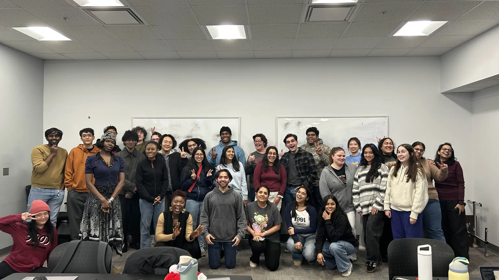
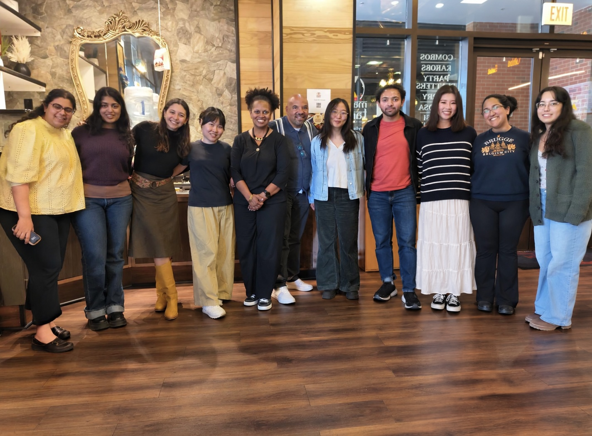
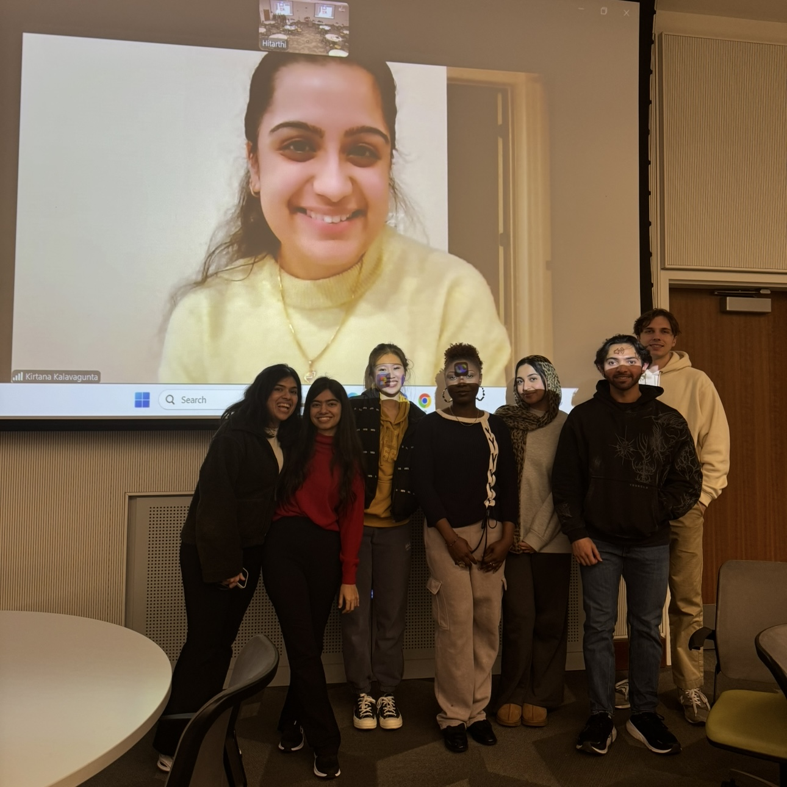
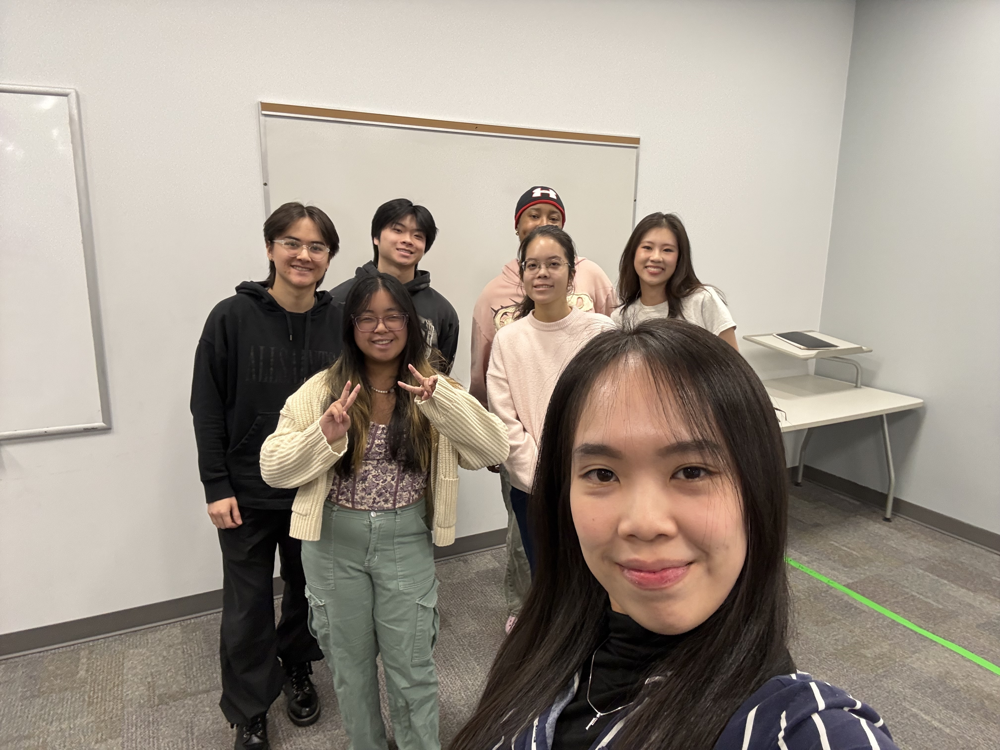
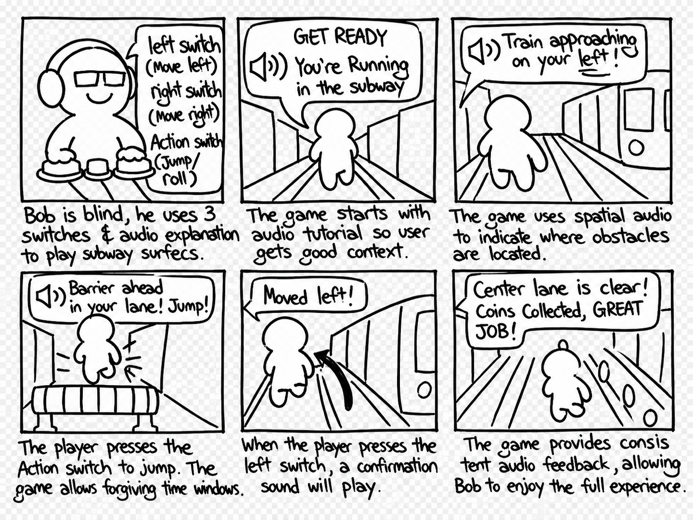
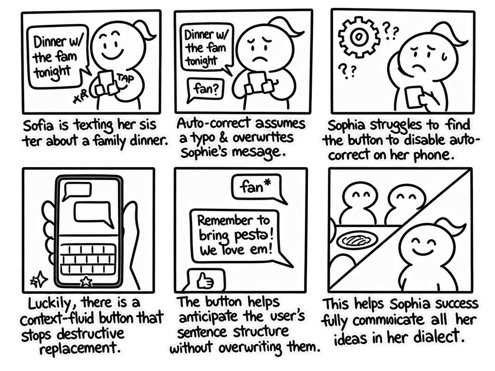
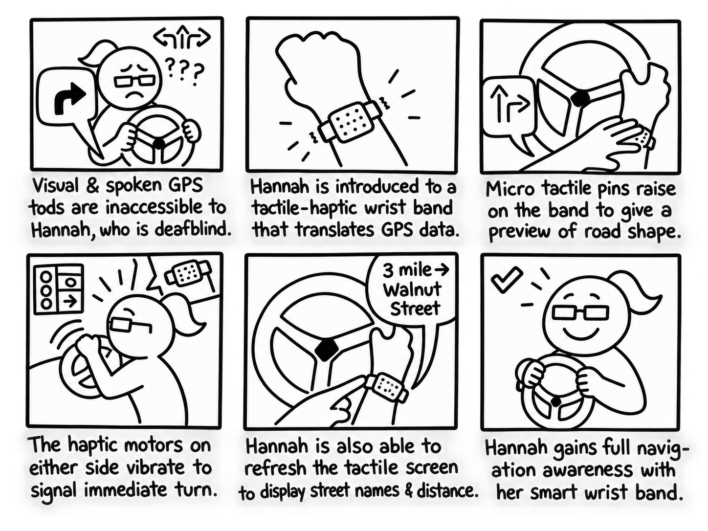

Hi, I'm Grace! I've loved drawing, animation, and visual storytelling since I was young. From illustrating for UCLA's Daily Bruin to building my own 3D simulator, I've always enjoyed bringing creative ideas to life. That passion eventually led me to UX/UI design, where I get to combine art with practical problem-solving.
I have a bachelor's degree in History from UCLA and studied UX/UI design at UCLA Extension. I'm currently pursuing my master's in Human-Computer Interaction at the University of Maryland, where I've been exploring user research, accessibility, and interaction design. I'm also working with Public Finance Firm (PFF), LLC on Treasora, designing solutions for real-world financial workflows.
Illustration
Animation
3D & Games
UX/UI Design
Accessibility

Completing Fundamentals of Human-Computer Interaction as part of my M.S. in Human-Computer Interaction at UMD.

Collaborating with my capstone team on the Treasora IAA module for Public Finance Firm (PFF), LLC.

Designed and developed wireframes and interactive prototypes with Figma intensively as part of HCIM's Interaction Design Studio course.

Supporting undergraduate students in learning visual communication and design thinking as a Teaching Assistant.
Illustrations
A few favorites, including work for UCLA's Daily Bruin. Click any piece to see it full size.
Storyboards from my graduate accessibility course at the University of Maryland. Each one follows a person with a different access need through a real barrier and a design that removes it.
Cozy Pause
Kavita has SMA and can't sketch by hand. Custom voice commands let her turn ideas into drawings and keep pace in class.

Subway Surfers for blind players
Bob plays with three switches. An audio tutorial, spatial audio cues and forgiving timing give him the context to enjoy the full game.
Step-free routes in NavCog
Alex is visually impaired and uses a wheelchair, but NavCog sends him to stairs. A step-free toggle routes him through elevators instead.

Context-fluid texting
Autocorrect overwrites Sophia's dialect. A context-fluid button anticipates her sentence structure without replacing her words.
ASL gloves with editable translation
Sally's gloves sometimes miss facial expression and grammar. Editable translations plus audio-to-text let her ask classmates for help.

Haptic wristband for navigation
Hannah is deaf-blind, so visual and spoken GPS don't work for her. Tactile pins preview the road and vibration signals each turn.